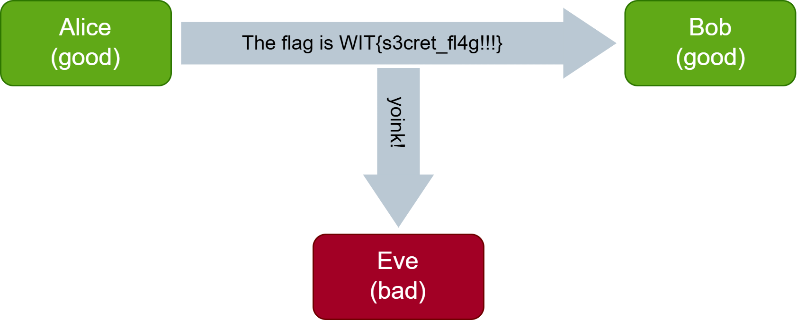
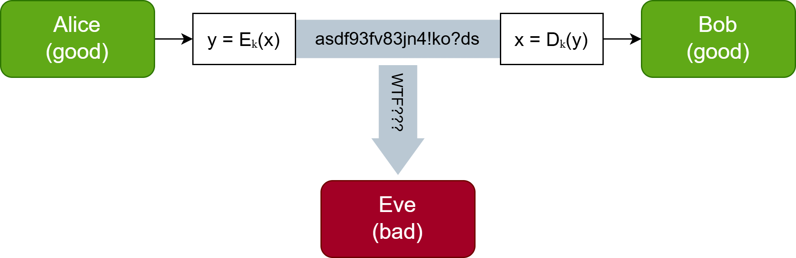
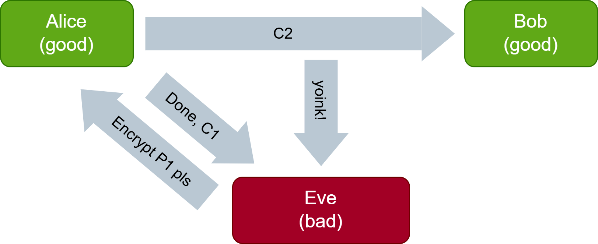
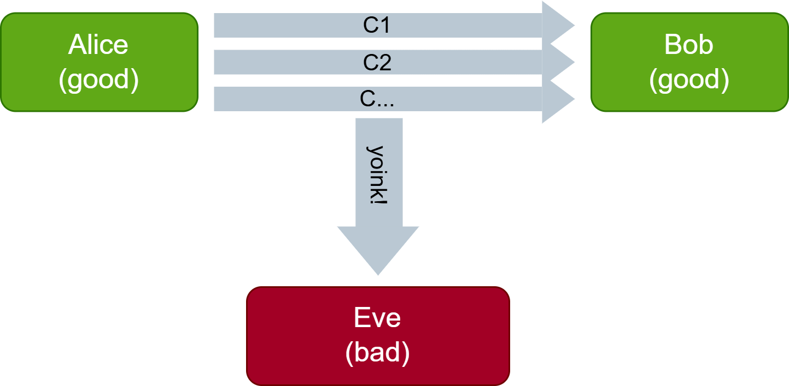
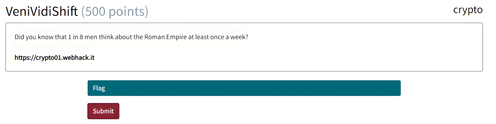
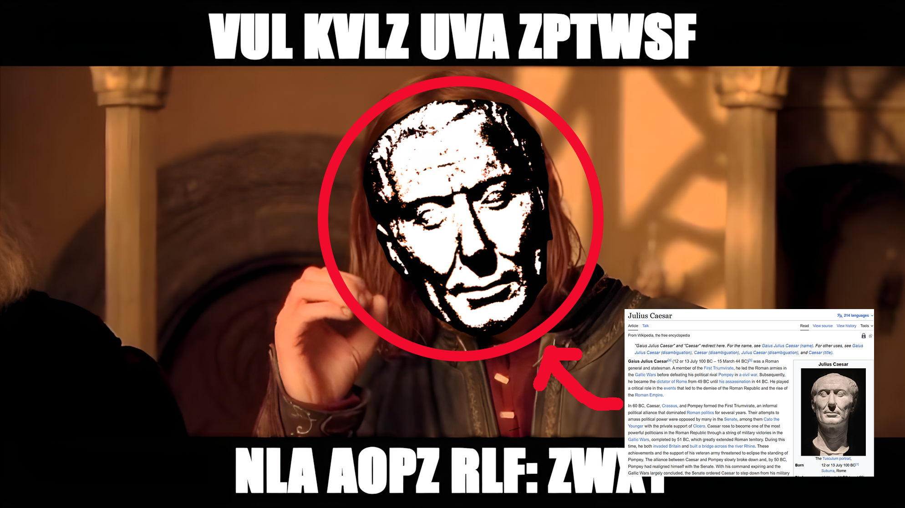
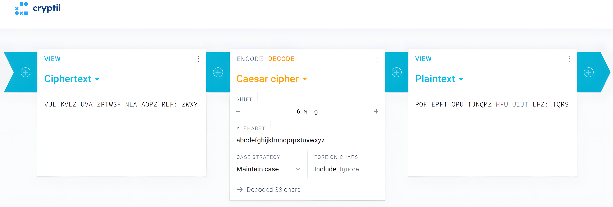
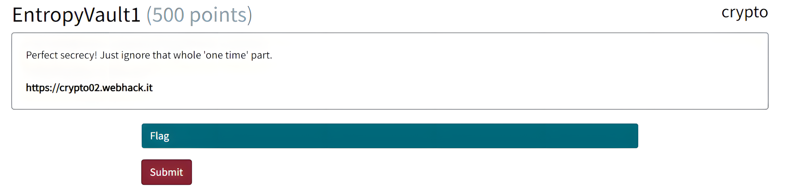
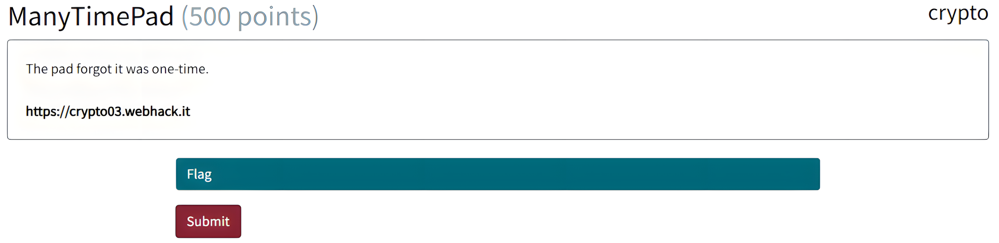
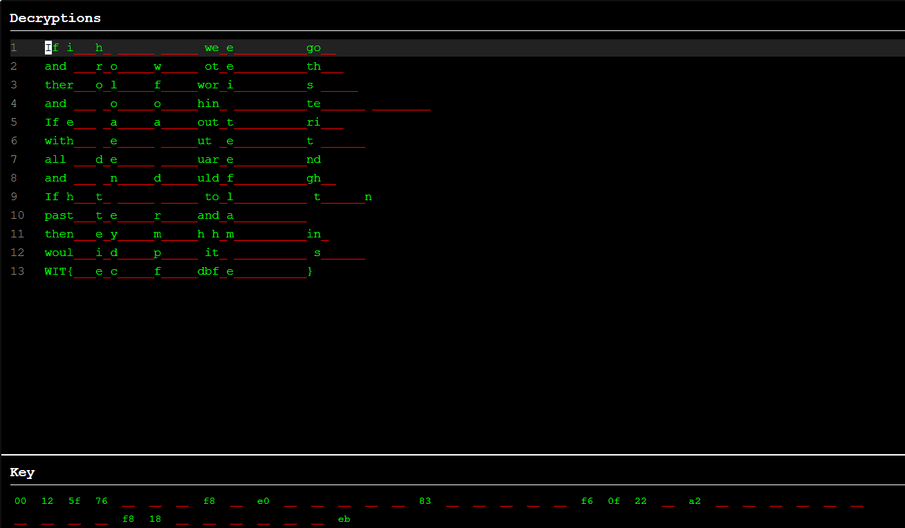

<!-- .slide: data-state="front hide-controls" --> <div id="title">Lab on Symmetric Cryptography</div> <div id="subtitle">Data Privacy and Security</div> <div id="date">Data Science and Management (DASMA)</div> --- ## Cryptography - Confidentiality <div class="content-center"> <div class="alert alert-recall"><b>Confidentiality</b> ensures that information is <b>only accessible to authorized parties</b>.</div> <br/> <div class="cell-center"> <p></p> </div> <br/> <div class="fragment" data-fragment-index="1"> <div class="cell-center"> How can we build a **secure communication channel** between Alice and Bob? </div> </div> </div> --- ## Secure Communication Channel using Symmetric Cipher <div class="content-center"> We use a **symmetric cipher** to: * encrypt ($E_k(x)$) using a key $k$ to obtain the ciphertext $y$ * decrypt ($D_k(y)$) using the **same key** $k$ the ciphertext $y$ to obtain the plaintext $x$ <br/> <p></p> <br/> <div class="fragment" data-fragment-index="1"> <div class="alert alert-note">NOTE: we are assuming that the key has been <b>securely shared</b> between Alice and the Bob!</div> <br/> </div> <div class="fragment" data-fragment-index="2"> <div class="cell-center"> **How can we implement $E_k$ and $D_k$?** </div> </div> </div> --- ## Classical Ciphers <div class="content-center"> <div class="alert alert-recall"><b>Shift Cipher (Caesar's cipher)</b></div> - **IDEA**: Shift letters in the alphabet by $k$ position (if $k=13$ then is called ROT13). - **Example**: "HELLO" with $k=3$ → "KHOOR". <br/> <div class="fragment" data-fragment-index="1"> <div class="alert alert-recall"><b>Substitution Cipher</b></div> - **IDEA**: Map each letter to a different letter ($k$ is the mapping, chosen randomly). - **Example**: A→Q, B→W, C→E, ... → "HELLO" → "ITSSG". <br/> </div> <div class="fragment" data-fragment-index="2"> <div class="alert alert-warning"><b>Exploitation</b></div> - **Shift Cipher**: Try all 26 possible shifts (brute force) or use frequency analysis. - **Substitution Cipher**: Frequency analysis of letters, or try all 26! (=288) mappings (brute force). </div> </div> --- ## One-Time-Pad (OTP) <div class="content-center"> <div class="alert alert-recall"><b>IDEA</b>: XOR plaintext with a random key of equal length.</div> - $P$ = plaintext - the text we want to encrypt. - $C$ = ciphertext - the encrypted text. - $K$ = key - used to encrypt the plaintext into the ciphertext. <br/> <div class="columns-container columns-center"> <div class="col"> <div class="cell-center"> $$E_k(P) = P \oplus K$$ </div> <br/> </div> <div class="col"> <div class="cell-center"> $$D_k(C) = C \oplus K$$ </div> <br/> </div> </div> <div class="fragment" data-fragment-index="1"> **Properties**: - Secret shared key to encrypt (and decrypt) a single plaintext. - Size(key) ≥ Size(plaintext). - Perfect cipher: the ciphertext ($C$) reveals no information about the plaintext ($P$) i.e. $Pr[P|C] = Pr[P]$. </div> </div> --- ## One-Time-Pad (OTP) - XOR <div class="content-center"> <div class="columns-container columns-center"> <div class="col"> | P | K | C = P XOR K | |---|---|:-----------:| | 0 | 0 | 0 | | 0 | 1 | 1 | | 1 | 0 | 1 | | 1 | 1 | 0 | <br/> </div> <div class="col"> **XOR Properties** * Self-inverse: $X \\oplus X = 0$ * Identity: $X \\oplus 0 = X$ * Associativity: $(X \\oplus Y) \\oplus Z = X \\oplus (Y \\oplus Z)$ <br/> </div> </div> <div class="fragment" data-fragment-index="1"> <div class="alert alert-hint"><b>INTUITION</b>: only when the two inputs are different, the result is 1.</div> </div> </div> --- ## One-Time-Pad (OTP) - Exploitation <div class="content-center"> <div class="alert alert-note"><b>NOTE</b>: We are assuming that the <b>same key</b> is re-used for all encryptions.</div> <br/> <div class="columns-container columns-center"> <div class="col"> <p></p> <br/> </div> <div class="col"> $$C1 = K \oplus P1$$ $$C1 \oplus P1 = (K \oplus P1) \oplus P1 = K$$ $$P2 = C2 \oplus K$$ <br/> </div> </div> <div class="fragment" data-fragment-index="1"> <div class="alert alert-hint"><b>INTUITION</b>: by leveraging the <b>self-inverse property</b> of XOR we can recover the key.</div> </div> </div> --- ## One-Time-Pad (OTP) - Exploitation <div class="content-center"> <div class="alert alert-note"><b>NOTE</b>: We are assuming that the <b>same key</b> is re-used for all encryptions.</div> <br/> <div class="columns-container columns-center"> <div class="col"> <p></p> <br/> </div> <div class="col"> $$C_1 = P_1 \oplus K, C_2 = P_2 \oplus K,...,$$ $$C_1 \oplus C_2 = (P_1 \oplus K) \oplus (P_2 \oplus K) = P_1 \oplus P_2$$ </div> </div> <div class="fragment" data-fragment-index="1"> Attacks on $P_1 \\oplus P_2$: - **Cribbing:** guess common words/phrases (e.g., "the ", " and") at various positions. - **Statistical Analysis:** use frequency analysis on character patterns, spaces, common letters. </div> </div> --- ## Time to Cook <div class="content-center"> <div class="cell-center"> </div> </div> --- <!-- .slide: data-state="break-blue hide-controls" --> ## Veni Vidi Shift <div class="content-center"> Crypto Challenge 01 </div> --- ## Veni Vidi Shift - Reconnaissance <div class="content-center"> <div class="cell-center"> <p></p> </div> <br/> What can we observe? - Multiple references to **Romans / Caesar**. - An image captioned with scrambled alphabet-only text. - The **hex-encoded flag**, provided by the server. </div> --- ## Veni Vidi Shift - Hypothesis <div class="content-center"> <div class="alert alert-hint">The Roman references suggest the use of a <b>Caesar (Shift) cipher</b>.</div> <div class="fragment" data-fragment-index="1"> <div class="alert alert-hint">The scrambled alphabet-only text suggests the use of a <b>character-based cipher</b>.</div> </div> <div class="fragment" data-fragment-index="2"> <div class="alert alert-hint">The hex-encoded flag suggests the use of <b>byte-level encryption</b>.</div> <br/> </div> <div class="cell-center"> <p></p> </div> </div> --- ## Veni Vidi Shift - Caesar Cipher Brute force <div class="content-center"> Python-based solution: ```python def caesar_shift(text, shift): result = "" for char in text: if char.isalpha(): base = ord('A') if char.isupper() else ord('a') #determine ASCII base #apply shift and wrap around alphabet shifted = chr((ord(char) - base + shift) % 26 + base) result += shifted else: #fallback for non-alphabetic char result += char return result ``` <br/> ```python secret_message = "VUL KVLZ UVA ZPTWSF NLA AOPZ RLF: ZWXY" original_key = None correct_shift = None for shift in range(26): #loop over all possible shifts test_decrypted = caesar_shift(secret_message, shift) ``` </div> --- ## Veni Vidi Shift - Caesar Cipher Brute force <div class="content-center"> Alternative: online decoders. <div class="cell-center"> <p></p> </div> - https://cryptii.com/pipes/caesar-cipher - https://www.dcode.fr/caesar-cipher - ... </div> --- ## Veni Vidi Shift - Exploitation <div class="content-center"> 1. **Brute force** all possible Ceasar shifts on the scrambled alphabet-only text. 2. Retrieve the key that is **hidden** within the scrambled text. 3. **Repeat** the key to match the encrypted flag's length. 4. **XOR** the hex-encoded flag with the extended key. <br/> ```python encrypted_bytes = bytes.fromhex(encrypted_flag) #hex -> bytes #extend key to match ciphertext len extended_key = (original_key * (len(encrypted_bytes) // len(original_key) + 1))[:len(encrypted_bytes)] key_bytes = extended_key.encode() #string -> bytes #XOR each byte of ciphertext with corresponding key byte flag_bytes = bytes([e ^ k for e, k in zip(encrypted_bytes, key_bytes)]) flag = flag_bytes.decode() #byte -> string print(f"Flag: {flag}\n") ``` </div> --- <!-- .slide: data-state="break-blue hide-controls" --> ## Entropy Vault `I` <div class="content-center"> Crypto Challenge 02 </div> --- ## Entropy Vault I - Reconnaissance <div class="content-center"> <div class="cell-center"> <p></p> </div> <br/> What can we observe? The challenge... - claims to **use One Time Pad** encryption; - provides an **encryption oracle** for user-chosen messages; - allows us to **retrieve the encrypted flag**. </div> --- <!-- .slide: data-auto-animate --> <h2 data-id="title">Entropy Vault I - Hypothesis</h2> <div class="content-center"> ```python key = os.urandom(500) #key picked once def encrypt(key, m): bits_key = ''.join([bin(x)[2:].zfill(8) for x in key]) bits_m = ''.join([bin(x)[2:].zfill(8) for x in m]) encrypted = '' #xor-ing of each individual bit for i in range(len(bits_m)): if bits_key[i] == bits_m[i]: encrypted += '0' #same bit => set 0 else: encrypted += '1' #different bit => set 1 encrypted = [int(encrypted[i:i+8], 2) for i in range(0, len(encrypted), 8)] return bytes(encrypted).hex() #byte -> hex ``` <br/> <div class="alert alert-hint">The server performs OTP encryption by re-using the <b>SAME</b> key.</div> <div class="fragment" data-fragment-index="1"> <div class="alert alert-hint">We can encrypt an <b>arbitrary number</b> of messages.</div> </div> </div> --- ## Entropy Vault I- Exploitation <div class="content-center"> 1. **Encrypt a known plaintext** by submitting a message to the encryption oracle. <br> 2. **Extract the key** by XOR-ing the known plaintext with the recovered ciphertext: ``` ciphertext ⊕ plaintext = key ``` <br> 3. **Decrypt the flag** by XOR-ing the encrypted flag with the recovered key: ``` encrypted_flag ⊕ key = flag ``` <br/> <div class="fragment" data-fragment-index="1"> <div class="alert alert-warning">NOTE: the plaintext must be <b>long enough</b> to generate a key that covers the full encrypted flag.</div> </div> </div> --- <!-- .slide: data-state="break-blue hide-controls" --> ## Many Times Pad <div class="content-center"> Crypto Challenge 03 </div> --- ## Many Times Pad - Background <div class="content-center"> <div class="alert alert-recall">This challenge is based on the MTP cryptanalysis utility: https://github.com/CameronLonsdale/MTP</div> <br/> <div class="columns-container columns-center"> <div class="col"> <img src="./img/lab1/mtp/crypto1.png" style="height: 550px;" /> </div> <div class="col"> MTP is an interactive cryptanalysis tool that lets you exploit OTP key reuse to recover plaintext from many‑time pad ciphertexts. - It performs automated cryptanalysis (**cribbing**) to produce a partial decryption. - It then lets users interactively complete the plaintext using **pattern recognition** and **context clues**. </div> </div> </div> --- ## Many Times Pad - Reconnaissance <div class="content-center"> <p></p> What can we observe? - The challenge interface mimics the **MTP tool**. - **Partially recovered plaintexts** are displayed, with unknown characters marked as underscores </div> --- ## Many Times Pad - Exploitation <div class="content-center"> <div class="alert alert-hint">Fill in the missing characters to reveal the <b>flag in the last line</b>.</div> <br/> <p></p> </div> --- <!-- .slide: data-state="break-green hide-controls" --> ## Crypto CTF Toolkit --- ## Crypto CTF Toolkit - Python Essentials <div class="content-center"> | Method / Function | What it does | | :---------------: | :----------- | | `.encode()` | Converts a string into bytes | | `.decode()` | Converts bytes into a readable string | | `bytes([...])` | Builds a bytes object from integers | | `bytearray()` | Creates a mutable byte sequence | | `int.from_bytes()` | Converts bytes to an integer | | `int.to_bytes()` | Converts an integer to bytes | | `bytes_to_long()` | Converts bytes to a large integer | | `long_to_bytes()` | Converts a large integer to bytes | </div> --- ## Crypto CTF Toolkit - Encoding <div class="content-center"> | Method / Function | What it does | | :---------------: | :----------- | | `bytes.fromhex()` | Converts hex strings into bytes | | `binascii.unhexlify()` | Converts hex into bytes | | `binascii.hexlify()` | Converts bytes into hex | | `base64.b64decode()` | Decodes Base64-encoded data | | `base64.b64encode()` | Encodes data in Base64 | </div> --- ## Crypto CTF Toolkit - Byte-wise Operations <div class="content-center"> | Method / Function | What it does | | :---------------: | :----------- | | `zip()` | Iterates over byte sequences in parallel | | `^` | XOR operator - performs bitwise XOR on integers | | `ord()` | Converts a character to an integer | | `chr()` | Converts an integer to a character | </div> --- ## Crypto CTF Toolkit — Rule of Thumb <div class="content-center"> <div class="alert alert-recall">Crypto operates on bytes. Humans read strings. Math prefers integers.</div> <br/> **Strings (Human-readable)** Examples: - ASCII strings - "FLAG{CRYPTO_IS_FUN}" - hex strings - 4d79537472696e67 - base64 strings - U0VMRUNUIFBBQ0s= <br/> <div class="alert alert-warning">Must be converted to bytes before crypto operations!</div> </div> --- ## Crypto CTF Toolkit — Rule of Thumb <div class="content-center"> <div class="alert alert-recall">Crypto operates on bytes. Humans read strings. Math prefers integers.</div> <br/> **Bytes (Crypto-native)** Examples: b'\x46\x4c\x41\x47', b'Hello World' Used for: - Bitwise operations e.g. XOR, AND, NOT - Encryption / decryption - Hashing </div>